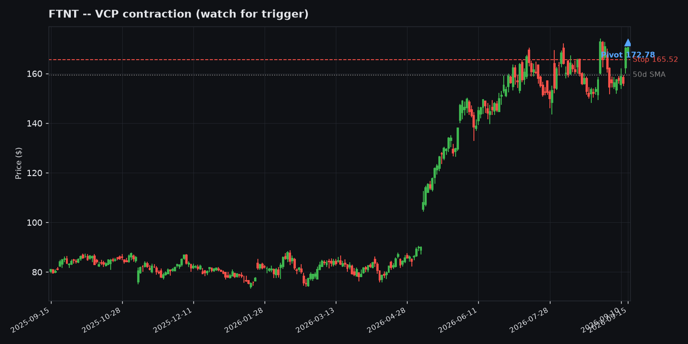
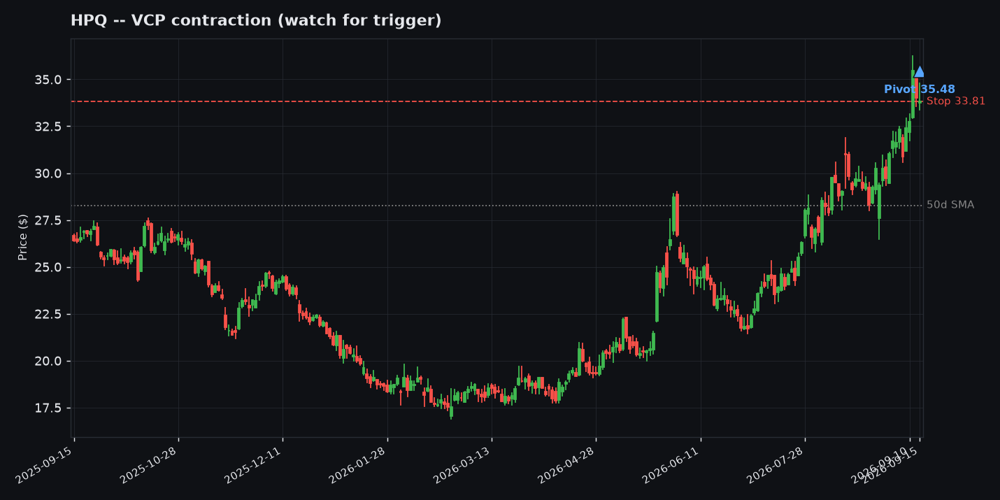
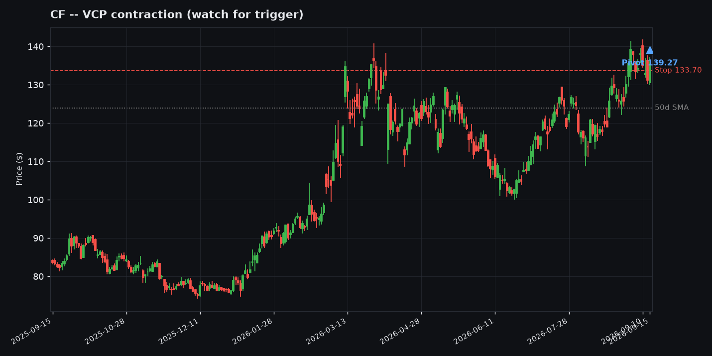
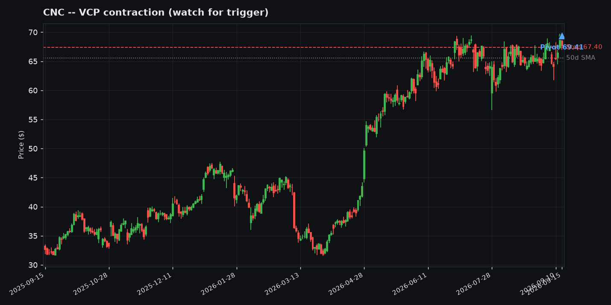
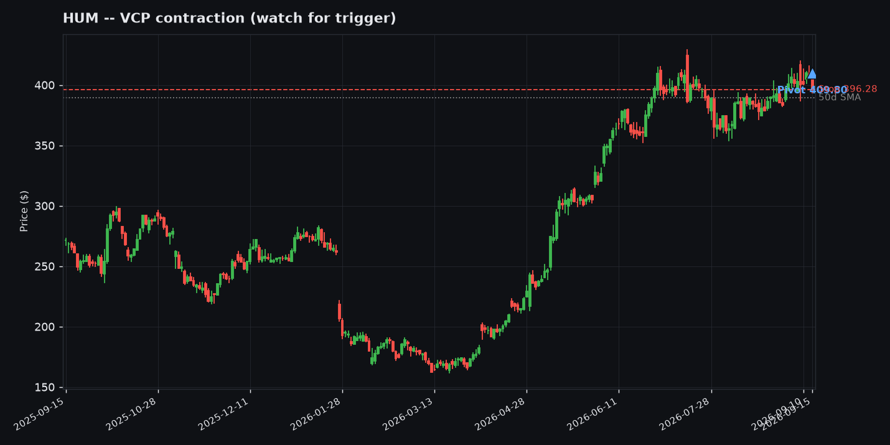
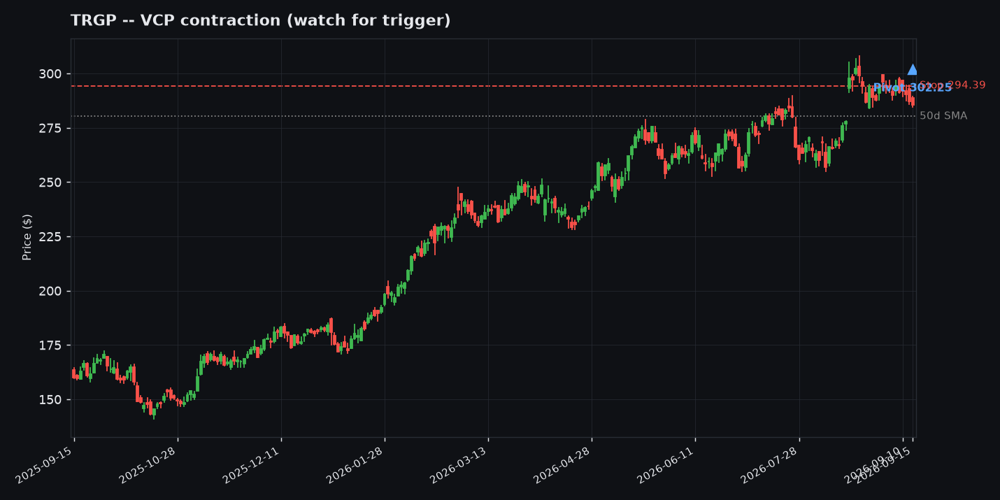
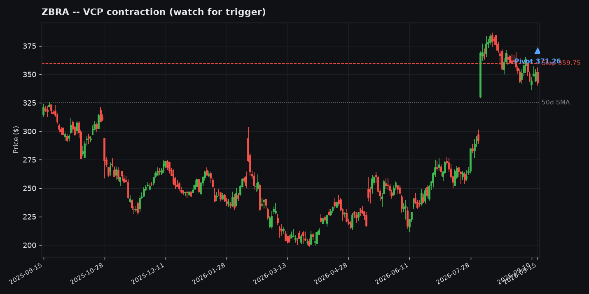
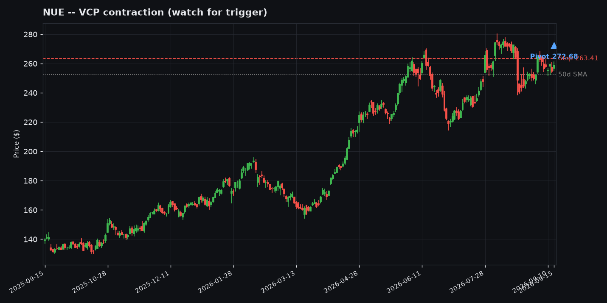
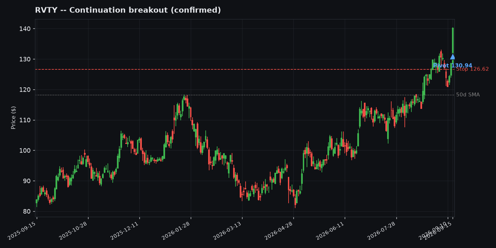
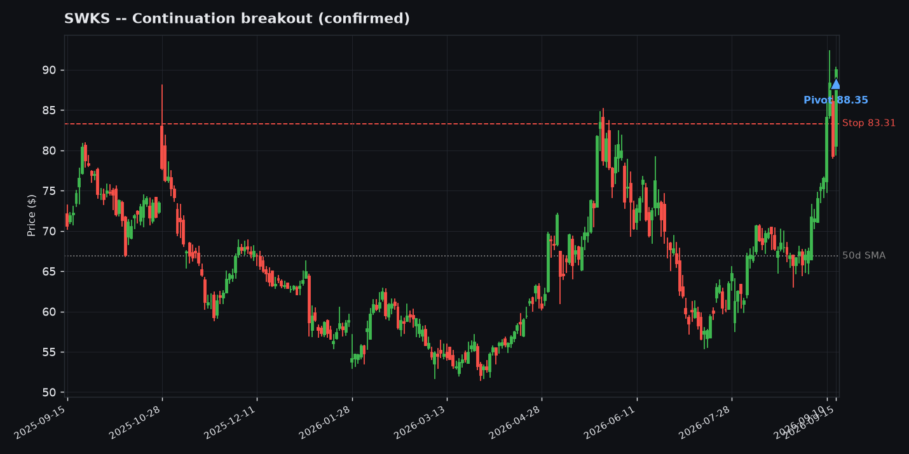

Worth Watching -- Today's Setups in Context
20 tickers as of 2026-09-15, ordered by likelihood rank (see the table above). Bars: blue = this ticker, green tick = grinder archetype avg, orange tick = rocket archetype avg. Screener output, not a recommendation.

Information Technology -- VCP contraction (watch for trigger)
Pivot 968.90 / Stop 906.89 / ADR% 6.4%
Why: ADR 5%+: 0.65R (n=604) + RS bucket: 0.547R (n=1520)
Off 52wk high20.3%
Base tightness (10d/50d)0.7x
% above 50-day SMA1.0%
% above 200-day SMA19.0%
ADR%6.4%

Information Technology -- VCP contraction (watch for trigger)
Pivot 58.90 / Stop 55.66 / ADR% 5.5%
Why: ADR 5%+: 0.65R (n=604) + RS bucket: 0.547R (n=1520)
Off 52wk high10.0%
Base tightness (10d/50d)1.3x
% above 50-day SMA8.2%
% above 200-day SMA63.2%
ADR%5.5%

Health Care -- VCP contraction (watch for trigger)
Pivot 174.38 / Stop 161.30 / ADR% 9.8%
Why: ADR 5%+: 0.65R (n=604) + VCP pattern: 0.326R (n=618) + RS bucket: 0.547R (n=1520)
Off 52wk high17.6%
Base tightness (10d/50d)0.9x
% above 50-day SMA53.6%
% above 200-day SMA146.4%
ADR%9.8%

Information Technology -- VCP contraction (watch for trigger)
Pivot 382.85 / Stop 364.09 / ADR% 4.9%
Why: ADR 4-5%: 0.475R (n=535) + RS bucket: 0.547R (n=1520)
Off 52wk high5.3%
Base tightness (10d/50d)1.1x
% above 50-day SMA7.0%
% above 200-day SMA57.7%
ADR%4.9%

Information Technology -- VCP contraction (watch for trigger)
Pivot 172.78 / Stop 165.52 / ADR% 4.2%
Why: ADR 4-5%: 0.475R (n=535) + RS bucket: 0.547R (n=1520)
Off 52wk high0.2%
Base tightness (10d/50d)1.0x
% above 50-day SMA8.1%
% above 200-day SMA53.2%
ADR%4.2%

Information Technology -- VCP contraction (watch for trigger)
Pivot 204.71 / Stop 195.91 / ADR% 4.3%
Why: ADR 4-5%: 0.475R (n=535) + RS bucket: 0.547R (n=1520)
Off 52wk high8.3%
Base tightness (10d/50d)1.3x
% above 50-day SMA4.0%
% above 200-day SMA43.3%
ADR%4.3%

Information Technology -- VCP contraction (watch for trigger)
Pivot 1027.77 / Stop 986.66 / ADR% 4.0%
Why: ADR 4-5%: 0.475R (n=535) + VCP pattern: 0.326R (n=618) + RS bucket: 0.547R (n=1520)
Off 52wk high23.6%
Base tightness (10d/50d)0.6x
% above 50-day SMA0.1%
% above 200-day SMA47.5%
ADR%4.0%

Information Technology -- VCP contraction (watch for trigger)
Pivot 35.48 / Stop 33.81 / ADR% 4.7%
Why: ADR 4-5%: 0.475R (n=535) + RS bucket: 0.343R (n=1304)
Off 52wk high4.7%
Base tightness (10d/50d)1.2x
% above 50-day SMA19.6%
% above 200-day SMA49.3%
ADR%4.7%

Materials -- VCP contraction (watch for trigger)
Pivot 139.27 / Stop 133.70 / ADR% 4.0%
Why: ADR 4-5%: 0.475R (n=535) + RS bucket: 0.343R (n=1304)
Off 52wk high2.7%
Base tightness (10d/50d)1.3x
% above 50-day SMA9.3%
% above 200-day SMA24.4%
ADR%4.0%

Health Care -- VCP contraction (watch for trigger)
Pivot 298.58 / Stop 289.92 / ADR% 2.9%
Why: ADR 2-3%: 0.304R (n=3935) + RS bucket: 0.547R (n=1520)
Off 52wk high8.6%
Base tightness (10d/50d)0.7x
% above 50-day SMA4.7%
% above 200-day SMA34.1%
ADR%2.9%

Health Care -- VCP contraction (watch for trigger)
Pivot 69.41 / Stop 67.40 / ADR% 2.9%
Why: ADR 2-3%: 0.304R (n=3935) + RS bucket: 0.547R (n=1520)
Off 52wk high2.5%
Base tightness (10d/50d)0.9x
% above 50-day SMA3.2%
% above 200-day SMA32.1%
ADR%2.9%

Information Technology -- VCP contraction (watch for trigger)
Pivot 521.10 / Stop 503.38 / ADR% 3.4%
Why: ADR 3-4%: 0.267R (n=1440) + RS bucket: 0.547R (n=1520)
Off 52wk high13.2%
Base tightness (10d/50d)0.7x
% above 50-day SMA1.8%
% above 200-day SMA44.1%
ADR%3.4%

Health Care -- VCP contraction (watch for trigger)
Pivot 409.80 / Stop 396.28 / ADR% 3.3%
Why: ADR 3-4%: 0.267R (n=1440) + RS bucket: 0.547R (n=1520)
Off 52wk high3.2%
Base tightness (10d/50d)1.0x
% above 50-day SMA1.9%
% above 200-day SMA39.7%
ADR%3.3%

Energy -- VCP contraction (watch for trigger)
Pivot 302.25 / Stop 294.39 / ADR% 2.6%
Why: ADR 2-3%: 0.304R (n=3935) + RS bucket: 0.343R (n=1304)
Off 52wk high5.5%
Base tightness (10d/50d)0.8x
% above 50-day SMA1.9%
% above 200-day SMA19.1%
ADR%2.6%

Consumer Discretionary -- VCP contraction (watch for trigger)
Pivot 169.89 / Stop 164.96 / ADR% 2.9%
Why: ADR 2-3%: 0.304R (n=3935) + VCP pattern: 0.326R (n=618) + RS bucket: 0.343R (n=1304)
Off 52wk high9.1%
Base tightness (10d/50d)0.8x
% above 50-day SMA3.2%
% above 200-day SMA25.5%
ADR%2.9%

Information Technology -- VCP contraction (watch for trigger)
Pivot 371.26 / Stop 359.75 / ADR% 3.1%
Why: ADR 3-4%: 0.267R (n=1440) + RS bucket: 0.343R (n=1304)
Off 52wk high10.5%
Base tightness (10d/50d)0.9x
% above 50-day SMA5.4%
% above 200-day SMA31.5%
ADR%3.1%

Materials -- VCP contraction (watch for trigger)
Pivot 272.68 / Stop 263.41 / ADR% 3.4%
Why: ADR 3-4%: 0.267R (n=1440) + VCP pattern: 0.326R (n=618) + RS bucket: 0.343R (n=1304)
Off 52wk high5.8%
Base tightness (10d/50d)0.9x
% above 50-day SMA2.6%
% above 200-day SMA24.1%
ADR%3.4%

Health Care -- Continuation breakout (confirmed)
Pivot 130.94 / Stop 126.62 / ADR% 3.3%
Why: ADR 3-4%: 0.698R (n=505)
Off 52wk high0.0%
Base tightness (10d/50d)1.1x
% above 50-day SMA18.6%
% above 200-day SMA35.9%
ADR%3.3%

Information Technology -- Continuation breakout (confirmed)
Pivot 231.00 / Stop 217.83 / ADR% 5.7%
Why: Flat system average -- own bucket sample too thin to trust
Off 52wk high0.0%
Base tightness (10d/50d)1.1x
% above 50-day SMA18.7%
% above 200-day SMA67.0%
ADR%5.7%

Information Technology -- Continuation breakout (confirmed)
Pivot 88.35 / Stop 83.31 / ADR% 5.7%
Why: Flat system average -- own bucket sample too thin to trust
Off 52wk high0.0%
Base tightness (10d/50d)1.6x
% above 50-day SMA34.6%
% above 200-day SMA40.8%
ADR%5.7%